Lecture 10: Arranging Tables
Brian J. Smith
2026-02-24
Arranging Tables
This lecture is based on Chapter 7 of Visualization Analysis & Design.
“Arrange Tables”

Arranging Tables
The goal of this chapter is to understand the visual encoding design choices for how to arrange tabular data spatially.
{kind=link}
Why Arrange?
- The arrange design choice covers all aspects of the use of spatial channels for visual encoding.
- Use of space dominates the user’s mental model, so it is the most important choice.
- The three highest ranked effectiveness channels for quantitative and ordered attributes are all related to spatial position:
- Planar position against a common scale
- Planar position along an unaligned scale
- Length
- The highest ranked effectiveness channel for categorical data relates to spatial position.
- There are no non-spatial channels effective for all attribute types
Arrange by Keys and Values
- Attributes can be categorized as key or value attributes:
- Key attributes are independent attributes that can be used as a unique index to lookup items.
- Can be categorical or ordinal.
- Value attributes are dependent attributes giving the value of a cell.
- Can be any type.
- Unique values of categorical or ordinal attributes are known as levels.
- Avoid overloading the word value.
- Same term used for
factorvariables inR.
- Key attributes are independent attributes that can be used as a unique index to lookup items.
Arrange by Keys and Values
- Design choices relate directly to the semantics of the table attributes, the number of keys and the number of values.
- An idiom can show:
- only values with no keys:
- Scatter plot
- one key and one value:
- Bar chart
- two keys and one value:
- Heat map
- many keys and many values:
- Scatter plot matrix
- Faceted scatter plot
- only values with no keys:
Express Quantitative Values
Scatter Plot
Two values, no keys
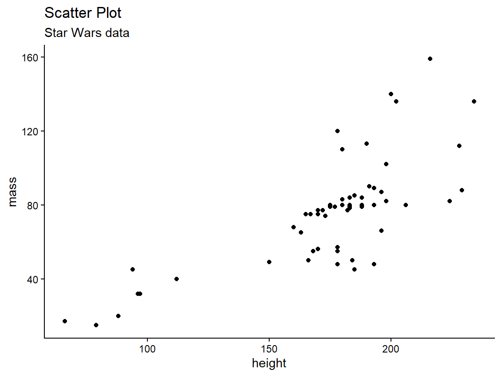
Express Quantitative Values
Scatter Plots
| Idiom | Scatterplots |
|---|---|
| What: Data | Table: two quantitative value attributes |
| How: Encode | Express values with horizontal and vertical spatial position and point marks |
| Why: Task | Find trends, outliers, distribution, correlation, locate clusters |
| Scale | Items: hundreds |
Express Quantitative Values
Scatter Plots
- Good for finding trends.
- Sometimes a trendline is superimposed.
- Color coding can show an additional attribute.
- Size coding can show yet another attribute.
- Sometimes called a bubble plot.
Separate, Order, and Align
Categorical Regions
- The principle of expressiveness would be violated if we encoded categorical attributes with spatial position.
- Instead, we can use spatial region.
- Regions are continuous, bounded areas that are distinct from each other.
- Drawing items with the same level uses spatial proximity to encode their similarity.
- Adheres to the expressiveness principle.
- Still leaves flexibility for how to encoded information within a region.
Separate, Order, and Align
Categorical Regions
- Distributing regions involves three operations:
- Separating into regions.
- Aligning the regions.
- Ordering the regions.
- Separating and ordering always happen.
- Alignment is optional.
- Separating should be done by the categorical attribute.
- Ordering and alignment should be done by an ordered attribute.
Separate, Order, Align
- With one key, use list alignment.
- Results in one region per item.
- Arrangement can be horizontal or vertical.
Separate, Order, Align
Bar Chart
One key, one value
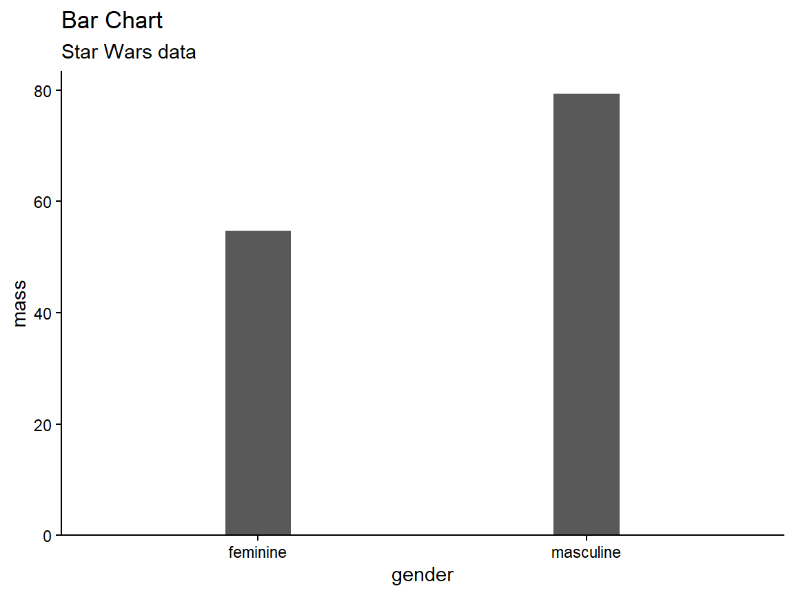
Separate, Order, Align
Bar Charts
- Use a line mark, aligned in a common frame.
- Encode a quantitative attribute with spatial position.
- Encode a categorical attribute with spatial region.
- Ordering can default to alphabetical or be data-driven.
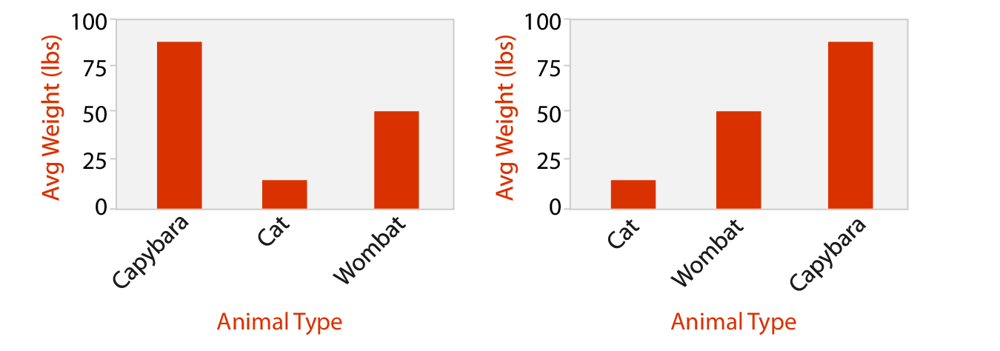
Separate, Order, Align
Bar Charts
| Idiom | Bar Charts |
|---|---|
| What: Data | Table: one quantitative value attribute, one categorical key attribute |
| How: Encode | Line marks, express values with aligned position, separate values with region |
| Why: Task | Lookup and compare values |
| Scale | Key attribute: dozens to hundreds of levels |
Separate, Order, Align
Stacked Bar Charts
Code
starwars %>%
filter(mass < 500,
!is.na(gender),
hair_color %in% c("black", "blond", "brown")) %>%
mutate(gender = factor(gender),
hair_color = factor(hair_color)) %>%
group_by(gender, hair_color) %>%
summarize(mass = sum(mass)) %>%
ggplot(aes(x = gender, y = mass, fill = hair_color)) +
geom_col() +
xlab("Gender") +
ylab("Total Mass") +
scale_fill_discrete(name = "Hair Color") +
coord_cartesian(expand = c(bottom = FALSE)) +
ggtitle("Stacked Bar Chart", subtitle = "Star Wars data") +
theme_bw()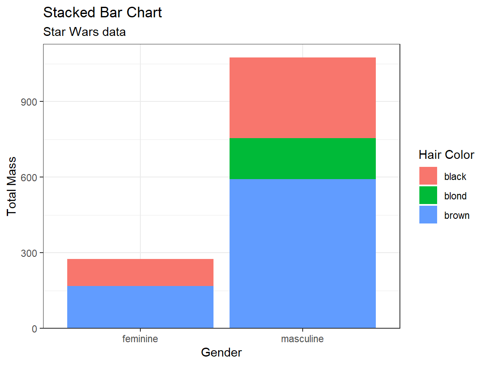
Separate, Order, Align
Stacked Bar Charts
| Idiom | Stacked Bar Charts |
|---|---|
| What: Data | Multidimensional table: one quantitative value attribute, two categorical key attributes |
| How: Encode | Bar glyph with length-coded subcomponents of value attribute for each category of secondary key attribute; separate bars by category of primary key attribute |
| Why: Task | Part-to-whole relationship, lookup values, find trends |
| Scale | Key attribute (main axis): dozens to hundreds of levels, Key attribute (stacked glyph axis): several to one dozen |
Separate, Order, Align
Dot and Line Charts
- Dot Chart
- Like a bar chart, but uses point marks (standard use); or, like a scatter plot, but one axis is ordered categories.
- One quantitative attribute using spatial position, one ordered attribute using spatial region.
- Line Chart
- A dot chart with lines connecting the dots to show trend.
{kind=link}
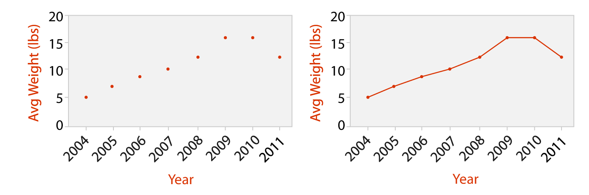
Separate, Order, Align
Dot and Line Charts
| Idiom | Dot Charts |
|---|---|
| What: Data | Table: one quantitative value attribute, one ordered key attribute |
| How: Encode | Express value attribute with aligned vertical position and point marks; separate/order into horizontal regions by key attribute |
Separate, Order, Align
Dot and Line Charts
| Idiom | Line Charts |
|---|---|
| What: Data | Table: one quantitative value attribute, one ordered key attribute |
| How: Encode | Dot chart with connection marks between dots |
| Why: Task | Show trend |
| Scale | Key attribute: hundreds of levels |
Separate, Order, Align
Bar vs. Line Charts
- Bar charts encourage discrete comparisons.
- Line charts encourage trend assessment.
- Should not be used for categorical (unordered) attributes (top right)
{kind=link}
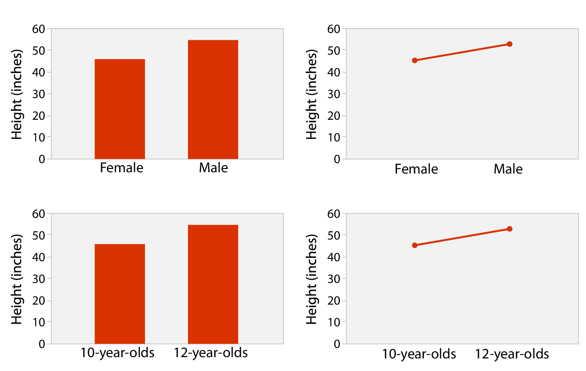
Separate, Order, Align
Matrix Alignment
- Distribute one key along rows and another along columns.
- Heat maps are the simplest example.
- Scatter Plot Matrices (SPLOMs) show all possible pairwise combinations.
Separate, Order, Align
Heat Map
Two keys, one value
Code
hm <- starwars %>%
filter(mass < 500,
!is.na(gender),
hair_color %in% c("black", "blond", "brown")) %>%
mutate(gender = factor(gender),
hair_color = factor(hair_color)) %>%
group_by(gender, hair_color, .drop = FALSE) %>%
summarize(n = n()) %>%
ggplot(aes(x = gender, y = hair_color, fill = n)) +
geom_tile() +
coord_cartesian(expand = FALSE) +
scale_fill_viridis_b() +
ggtitle("Heat Map", subtitle = "Star Wars data") +
theme_classic()
print(hm)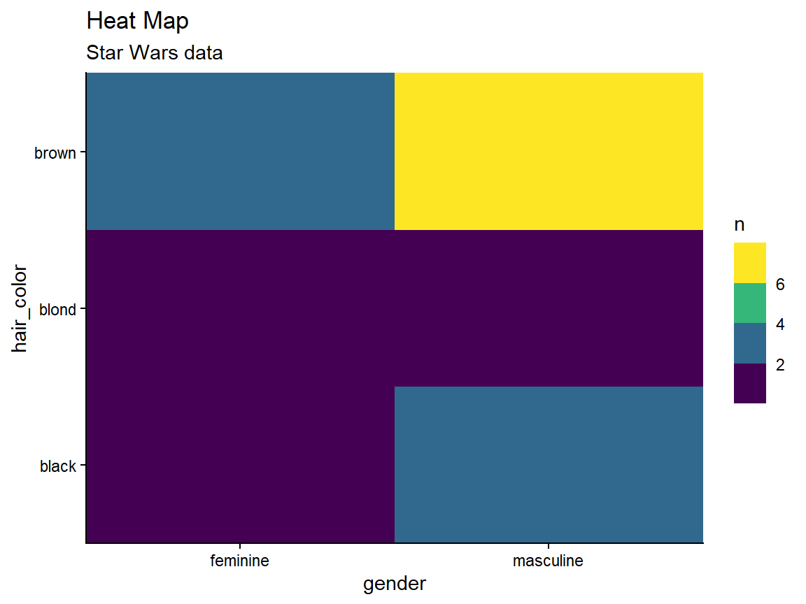
Separate, Order, Align
Heat Maps
| Idiom | Heat Maps |
|---|---|
| What: Data | Table: two categorical key attributes, one quantitative value attribute |
| How: Encode | 2D matrix alignment of area marks, diverging color map |
| Why: Task | Find clusters, outliers; summarize |
| Scale | Items: one million; categorical attribute levels: hundreds; quantitative attribute levels: 3 - 11 |
Separate, Order, Align
Scatter Plot Matrix
Many keys, many values
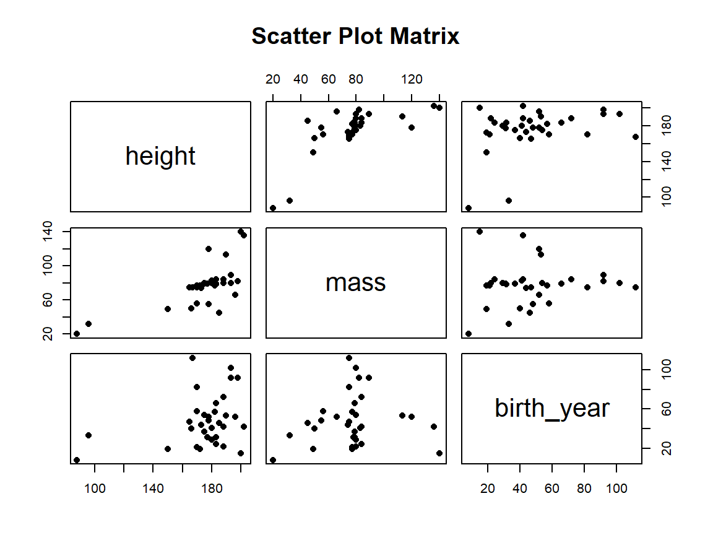
Separate, Order, Align
Scatter Plot Matrix
| Idiom | SPLOMs |
|---|---|
| What: Data | Table |
| What: Derived | Ordered key attribute; list of original attributes |
| How: Encode | Scatter Plots in 2D matrix alignment |
| Why: Task | Find correlations, trends, outliers |
| Scale | Attributes: one dozen; items: dozens to hundreds |
Separate, Order, Align
Faceted Scatter Plot
Many keys, many values
Code
starwars %>%
filter(mass < 500,
!is.na(gender),
hair_color %in% c("black", "blond", "brown")) %>%
mutate(gender = factor(gender),
hair_color = factor(hair_color)) %>%
ggplot(aes(x = height, y = mass)) +
facet_grid(gender ~ hair_color) +
geom_point() +
coord_cartesian(expand = FALSE) +
ggtitle("Faceted Scatter Plot", subtitle = "Star Wars data") +
theme_bw()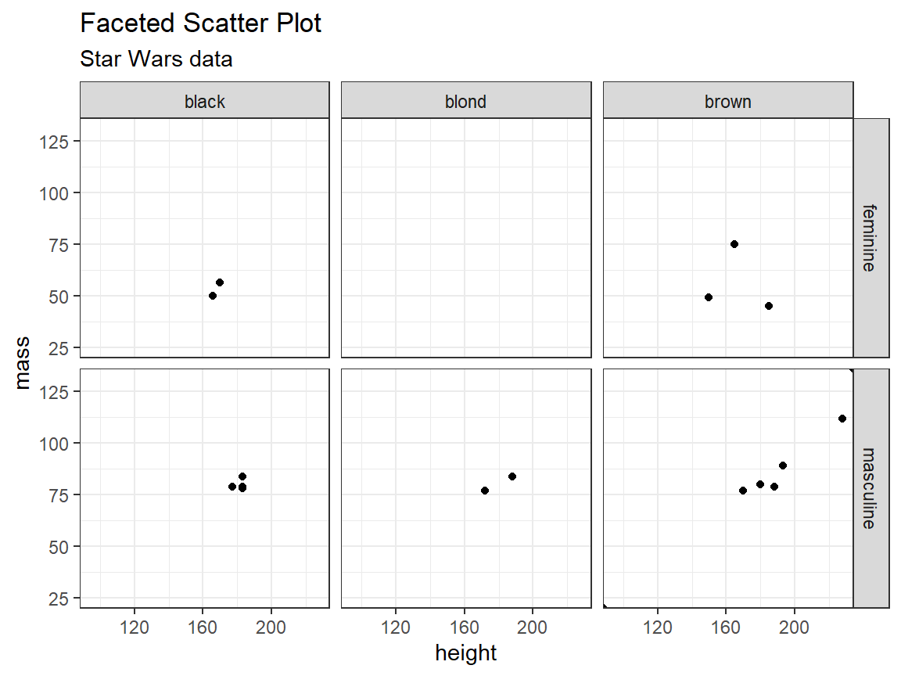
Spatial Axis Orientation
- Spatial axes can be oriented three ways:
- Rectilinear
- Parallel
- Radial
Spatial Axis Orientation
Rectilinear Layouts
- The most common layouts in data viz.
- All the previous examples.
- Limited to two perpendicular axes.
- Or at most, three, although depth is a low-precision channel.
Spatial Axis Orientation
Parallel Layouts
- Allow more than three attributes to be encoded with spatial position channel.
- Parallel coordinates plots are used to show many attributes.
- Use jagged lines that cross each axis exactly once.
{kind=link}
Spatial Axis Orientation
Parallel Layouts
- Use two spatial dimensions:
- one to show a quantitative value,
- the other to lay out the multiple axes.
Spatial Axis Orientation
Parallel Layouts
- Patterns are easily seen between neighboring axes, but not easily for distant axes.
- Ordering axes is a critical decision.
- These layouts have a long training time.
- Most users are not familiar with these plots and don’t have intuition about the patterns.
- Often used in conjunction with more familiar idioms, such as scatter plots (i.e., multiple views).
Spatial Axis Orientation
Radial Layouts
- Items are distributed around a circle using the angle channel.
- Also uses one ore more linear spatial channels.
- Might imply one attribute is more important than another.
{kind=link}
Spatial Axis Orientation
Radial Layouts
- Natural coordinate system is polar coordinates.
- One dimension is an angle.
- The other dimension is a spatial position.
- Mathematically completely equivalent to Cartesian coordinates.
Spatial Axis Orientation
Radial Layouts
- While, mathematically, radial layout are equivalent to Cartesian coordinates, perceptually, they are not.
- The angle channel is less accurately perceived than the rectilinear spatial position.
- The angle channel is inherently cyclic.
- Radial layouts may be more effective for showing periodic patterns.
Spatial Axis Orientation
Radial Layouts
Code
library(patchwork)
cyclic <- data.frame(x = seq(0, 2*pi, length.out = 300)) %>%
mutate(y = sin(4*x))
a <- ggplot(cyclic, aes(x = x, y = y)) +
geom_line() +
ggtitle("Rectilinear") +
theme_bw()
b <- a +
coord_polar() +
scale_x_continuous(breaks = c(0, pi/2, pi, 3*pi/2, 2*pi),
labels = c("0", "π/2", "π", "3π/2", "2π")) +
ggtitle("Radial")
a + b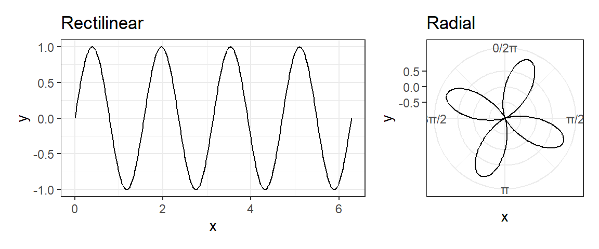
Side note, the polar transformation is a key idea behind the Fast Fourier Transform
Spatial Axis Orientation
Radial Bar Charts
| Idiom | Radial Bar Charts |
|---|---|
| What: Data | Table: one quantitative attribute, one categorical attribute |
| How: Encode | Length coding of line marks; radial layout |
Spatial Axis Orientation
Rectilinear vs. Radial Layouts
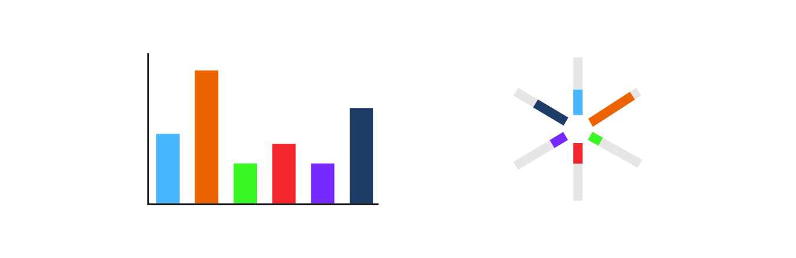
Spatial Axis Orientation
Pie Charts
Code
pie <- starwars %>%
filter(hair_color %in% c("black", "blond", "brown")) %>%
group_by(hair_color) %>%
summarize(n = n()) %>%
ggplot(aes(x = "", y = n, fill = hair_color)) +
geom_bar(stat = "identity", width = 1) +
coord_polar("y", start = 0) +
xlab(NULL) +
ylab(NULL) +
ggtitle("Pie Chart", subtitle = "Star Wars data") +
theme_classic() +
theme(axis.text.x = element_blank())
print(pie)
Spatial Axis Orientation
Pie Charts
| Idiom | Pie Charts |
|---|---|
| What: Data | Table: one quantitative attribute, one categorical attribute |
| Why: Task | Part-whole relationship |
| How: Encode | Area marks (wedges) with angle channel; radial layout |
| Scale | One dozen categories |
Spatial Axis Orientation
Polar Area Charts
Code
pa <- starwars %>%
filter(hair_color %in% c("black", "blond", "brown")) %>%
group_by(hair_color) %>%
summarize(n = n()) %>%
ggplot(aes(x = hair_color, y = n, fill = hair_color)) +
geom_col(width = 1) +
coord_polar() +
xlab(NULL) +
ylab(NULL) +
ggtitle("Polar Area Chart", subtitle = "Star Wars data") +
theme_classic() +
theme(axis.text.x = element_blank())
print(pa)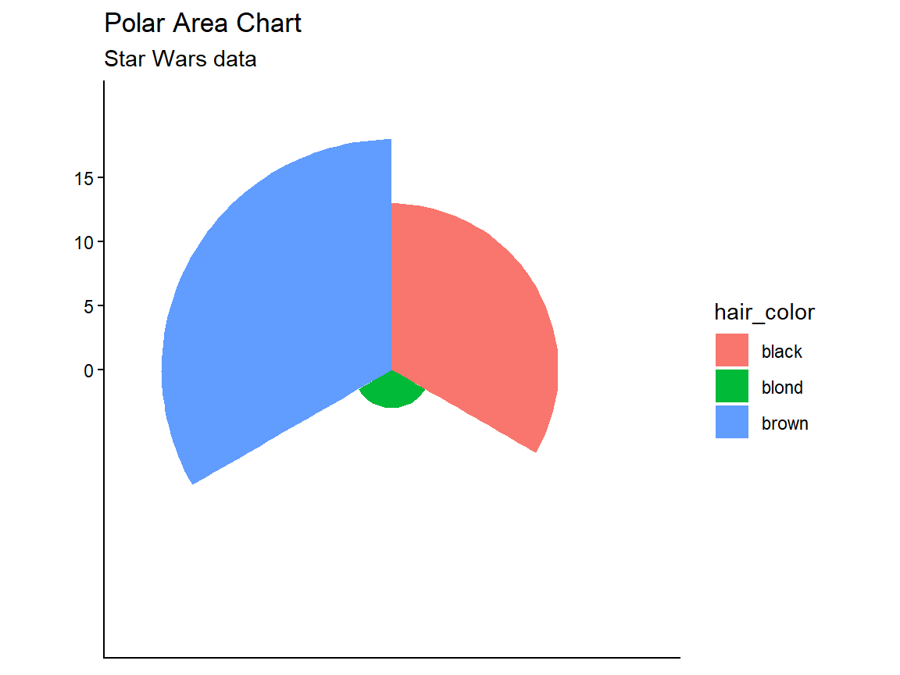
Spatial Axis Orientation
Polar Area Charts
| Idiom | Polar Area Charts |
|---|---|
| What: Data | Table: one quantitative attribute, one categorical attribute |
| Why: Task | Part-whole relationship |
| How: Encode | Area marks (wedges) with angle channel; radial layout |
| Scale | One dozen categories |
Spatial Axis Orientation
Polar Area Charts
- Pie charts require angle and area judgements.
- Polar area charts are a more direct equivalent of bar charts.
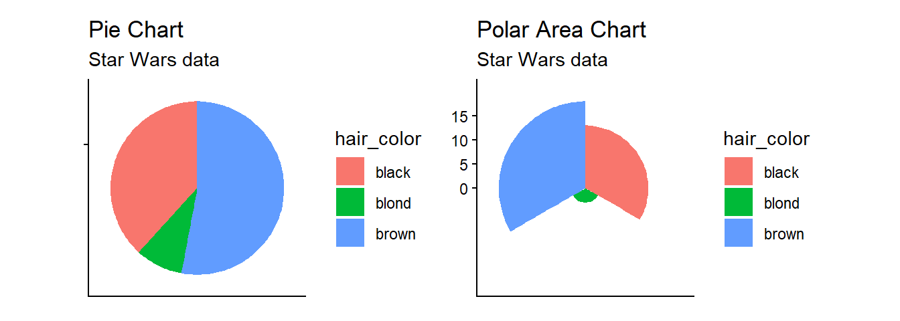